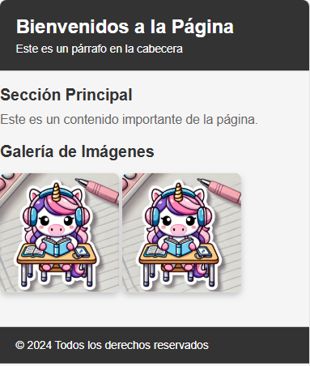

Sobre Mí
Soy una profesional con un perfil multidisciplinar, formada en áreas como atención al cliente, jardinería y floristería, y producción industrial. A lo largo de mi trayectoria, he adquirido experiencia en el diseño y mantenimiento de jardines, la creación de arreglos florales, la gestión de inventarios y el trabajo en equipo para garantizar la calidad y eficiencia en distintos proyectos. Mi capacidad para adaptarme a diferentes entornos y roles me ha permitido desarrollar una visión integral del trabajo.
Actualmente, estoy cursando un Grado Medio en Sistemas Microinformáticos y Redes para ampliar mis conocimientos técnicos y combinar la tecnología con mi experiencia práctica.
Me defino como una persona organizada, con atención al detalle y siempre en busca de nuevos retos para seguir aprendiendo y creciendo profesionalmente.


Proyectos
| Imagen | Título | Descripción |
|---|---|---|
| Creatividad con generadores de imágenes | Tres prompts con sus respectivas imágenes artísticas generadas. | |
| Explorando estilos de texto y fondo | Página web con estilos variados en texto y decoraciones visuales. | |
| Botón interactivo | Un botón con la leyenda "Hazme grande" en un diseño simple. | |
| Perfil de Usuario | Tarjeta básica para mostrar información personal breve y relevante. | |
|  | Bienvenida a la Página | Diseño web con cabecera, contenido y galería atractiva. |
| Árbol con Búho | Ilustración sencilla de un búho en un árbol que gira sobre si misma. |
Habilidades y Conocimientos
HTML
CSS
Python
JavaScript